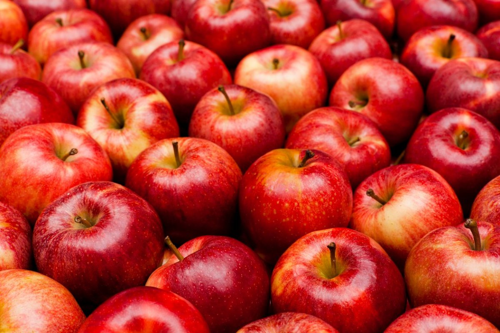
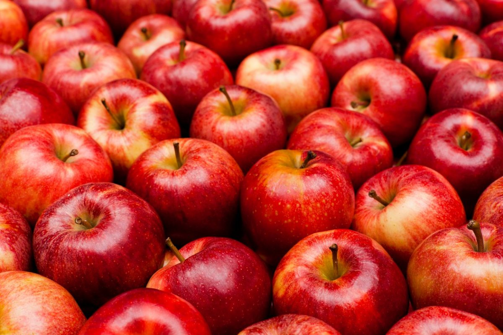

Description
Apple Crumb pie recipe that has crumbs as a topping for an extra crunch! This recipe is by Jackie on allrecipes.com. This crumb topping for apple pie adds a delicious crunch. You can add walnuts and raisins to this pie to make it even dreamier!
- Prep Time: 30 mins
- Cook Time: 50 mins
- Total Time: 1hr 20 mins
- Servings: 8
- Yield: 1 9 inch pie
Nutrition Facts
- 408 Calories
- 15g Fat
- 70g Carbs
- 4g Protein
Ingredients
- 6 cups thinly sliced apples
- 1 tablespoon lemon juice (Optional)
- 3/4 cup white sugar
- 2 tablespoons all-purpose flour
- 1/2 teaspoon ground cinnamon
- 1/8 teaspoon ground nutmet
- 1/2 cup raisins (Optional)
- 1/2 cup chopped walnuts (Optional)
- 1 (9 inch) pie shell
- 1/2 cup all-purpose flour
- 1/2 cup packed brown sugar
- 3 tablespoons butter
Directions
-
Step 1
Preheat the overn to 375 degrees F (190 degrees C).
-
Step 2
Place sliced apples in a large bowl; sprinkle with lemon juice. Mix white sugar, 2 tablespoons flour, cinnamon, and nutmeg together in a small bowl; sprinkle mixture over apples and toss until evenly coated. Stir in raisins and walnuts; transfer mixture into pie shell.
-
Step 3
Mix 1/2 cup flour and brown sugar together in a small bowl. Blend in butter with a fork until mixture is crumbly; sprinkle over apple filling. Cover top of pie loosely with aluminum foil.
-
Step 4
Bake in the preheated oven for 25 minutes. Remove foil and bake until top is golden brown and filling is bubbly, about 25 to 30 minutes more. Cool on a wire rack before serving.
 
